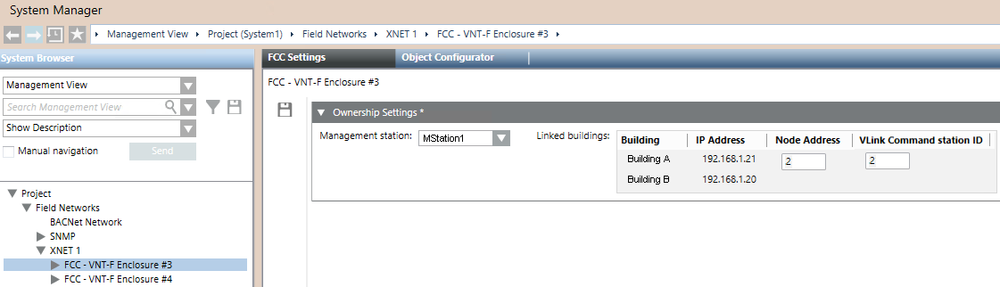

GCNET FCC Configuration Reference
In GCNET configurations UL-864 10th ed. and ULC-S527 compliant, the XNET tab of the FCC panel node contains the Ownership Settings Station expander where you select the management station to associate and the buildings (XNET networks) that are controlled.
In a Zeus project, for example, Building A is set to be controlled by FCC1 via the Vlinks Command Station 2 of the FACP node 2, or by FCC2 via the Vlinks Command Station 3 of FACP node 2.
NOTE: In Zeus, the Vlinks Command Stations represent the control links between the FACP node and the FCCs.
In Desigo CC, in FCC Settings> Ownership settings, FCC1 is assigned to Management station=MStation1, linked Building=Building A, Node Address=2, Vlink Command station ID=2, while FCC2 is associated with Management station=MStation2 , linked Building=Building A, Node Address=2, Vlink Command station ID=3.
This means that, when GCNET network control is requested and granted to FCC1, its linked Management Station 1 obtains the ownership control of the fire panels in the Building A. When the control is requested and granted at FCC2, the ownership of the Building A is transferred to the Management Station 2.
